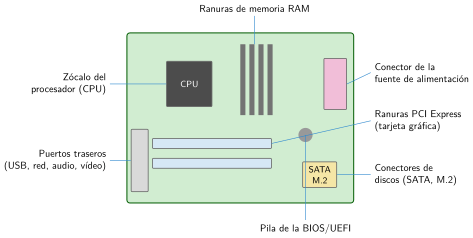

Dentro del ordenador: placa base, CPU y memorias
Criterios: 2a
🤔 Pienso10 min
Qué hago aquí: Piensa un momento y contesta con lo que ya sabes. No pasa nada si no lo sabes: es para empezar.
Dibuja cómo te imaginas el interior de la torre de un ordenador. Pon nombre a lo que conozcas.
📖 Leo y aprendo40 min
Qué hago aquí: Lee despacio, mira los dibujos y los ejemplos, y quédate con la idea clave del final.
Dentro de la torre (o del portátil) están los componentes que procesan y guardan la información. Todos se conectan a la placa base, que es la espina dorsal: el circuito que comunica la CPU, la memoria, los discos y las tarjetas.

Un ordenador necesita dos tipos de memoria:
platos que giran; barato y grande, pero lento y frágil
chips de memoria; rápido, silencioso, resistente
convierte la corriente para los componentes
ventiladores y disipadores
✏️ Hago130 min
Qué hago aquí: Haz las actividades en orden. Empieza siempre por las básicas.
Escribe qué componente es.
- Su contenido se borra al apagar:
- Su velocidad se mide en GHz:
- Comunica todos los componentes:
- Disco sin piezas móviles:
Mira las características de tu ordenador (Configuración › Sistema › Información, o

+
) y anota el procesador, la RAM, el tipo de sistema y la versión de Windows. Mira la capacidad libre del disco en el Explorador de archivos.
¿Por qué es más rápido un SSD que un HDD? ¿Cuál pondrías en el portátil de una comercial que viaja mucho? ¿Por qué?
Si un ordenador va muy lento cuando tienes varios programas abiertos, ¿qué componente ampliarías? Razónalo.
Compara dos ordenadores de una tienda en línea para la oficina: ¿cuál comprarías y por qué? Fíjate en la CPU, la RAM y el tipo de disco.
🚀 Amplío (si quieres saber más)
Qué hago aquí: ¿Has terminado? Lee la curiosidad o elige el reto. Es voluntario.
Investiga qué es la memoria caché del procesador y por qué es tan rápida. ¿Dónde está?
✅ Compruebo10 min
Qué hago aquí: Contesta sin mirar la ficha y marca cómo lo llevas.